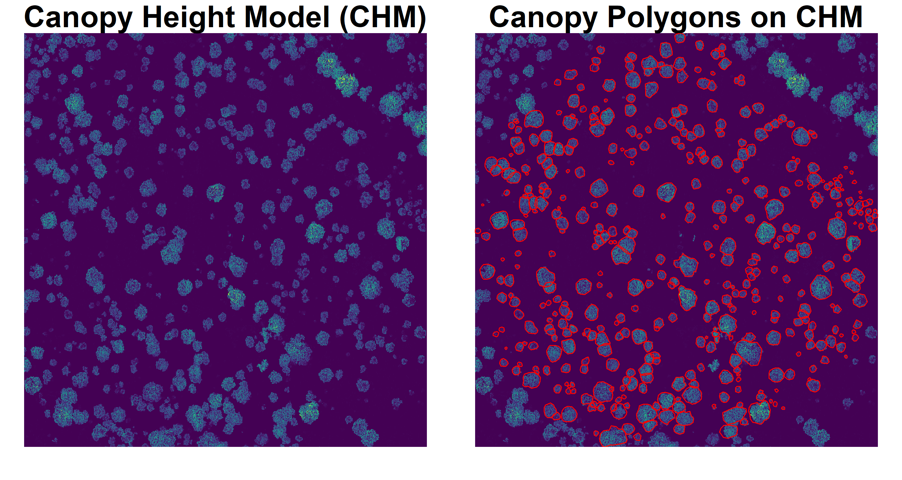
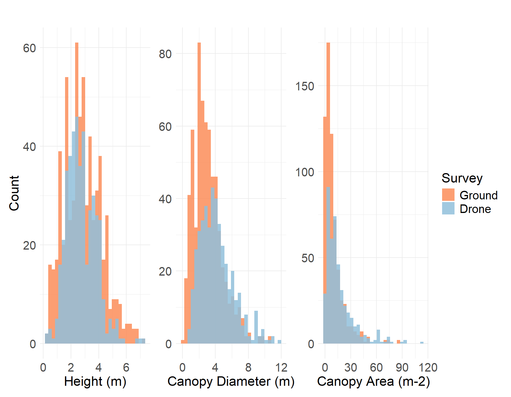

Comparison of Drone and Ground Data at US-SRG
Field Summary
In late May and early June, we conducted a census of all woody plants within a 100-meter radius of the US-SRG flux tower in southeastern Arizona. For each individual, we recorded height, canopy diameter, and distance from the tower. During this time, we also collected high-resolution imagery, multispectral data, and LiDAR using drones. This report summarizes the distributions of characteristics obtained from both ground-based and drone-based observations.
Comparing Distributions
We compared height, canopy diameter, and canopy area between the two survey methods. To ensure consistency, small shrubs such as honeysuckle and cacti were excluded from both datasets for this comparison. In the drone survey, canopies were manually delineated within a 100-meter radius of the flux tower, excluding a fenced area to the northeast that was also omitted from the ground-based survey. Canopy heights were derived from a LiDAR-based canopy height model. Canopy diameters and areas were calculated from the dimensions of the canopy polygons.
The distributions for all three variables differ significantly in shape and median value, with the exception of height, where the median values are not significantly different.

The drone-based overstory characterization is less likely to capture
individuals with overlapping canopies (i.e., a canopy growing into another canopy)
individuals with stacked canopies (i.e., a tree growing under another tree)
very small individuals (<1.5-m)
And may be more likely to capture dead standing trees, especially pre-monsoon/before green-up.
As a result, drone-derived canopy diameters and areas tend to be skewed toward larger values, while the field data captures a broader range of smaller individuals. This is also reflected in sample size, as the drone survey identified about 400 individuals, while the field survey documented closer to 600.